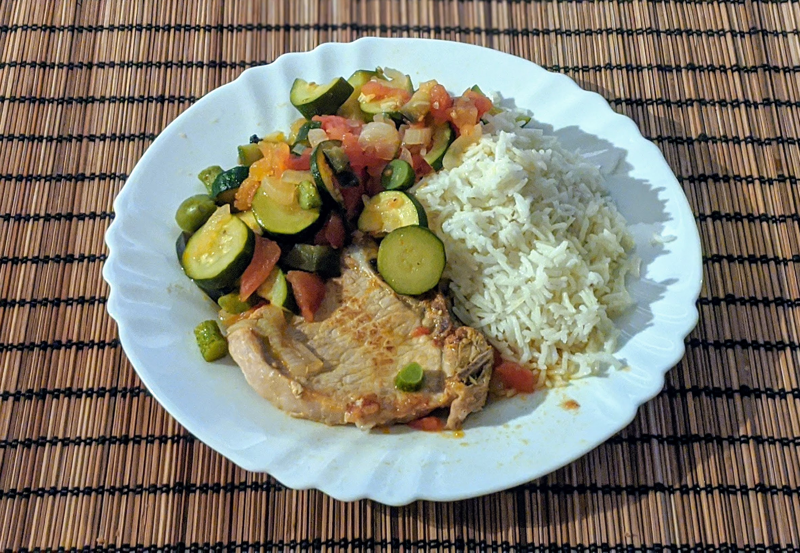

Côtes de porc à la provençale

Pour 4 personnes :
- Quatre côtes de porc (ou des escalopes, ou de l'échine, c'est pas très important)
- Trois oignons
- Quatre courgettes
- Six tomates
- Une dizaine de petits cornichons
- Une quinzaine d'olives
- Un cube de bouillon de légumes
- Thym, laurier
- Sel, poivre, huile d'olive
- Faire revenir les côtes de porcs avec de l'huile d'olive dans une poêle sur feu vif, jusqu'à ce qu'elles soient bien dorées des deux côtés.
- Pendant ce temps, faire bouillir de l'eau, enlever les queues des tomates, tracer une croix au couteau de l'autre côté des tomates, et les plonger dans l'eau bouillante.
- Puis (ou en même temps, c'est une recette qui se parallélise bien), éplucher et couper en morceaux (ou en demi-rondelles, tu fais un peu ce que tu veux tant que c'est pas trop gros) les courgettes et les oignons. Les mettre à chauffer dans une cocotte, avec de l'huile d'olive, du sel et du poivre - d'abord violemment quelques secondes, puis gentiment.
- Remplir un bol d'eau bouillante et faire fondre le cube de bouillon dedans.
- Sortir les tomates de l'eau (il faut qu'elles y soient restées un bon quart d'heure, quand même), les éplucher et les réduire en purée grossière. Les rajouter dans la cocotte.
- Ajouter le bouillon, quelques feuilles de laurier, du thym, les olives et les cornichons. Faire quelques traces au couteau dans la viande, et les mettre dans la casserole, en surface.
- Laisser mijoter 20 minutes, en retournant et immergeant la viande dans le jus de cuisson à mi-cuisson. Servir chaud.
Remarque : ça fait pas mal de jus. On peut s'en servir pour faire cuire du riz, par exemple.